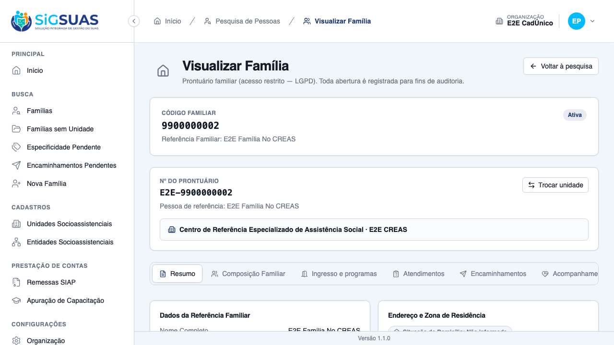
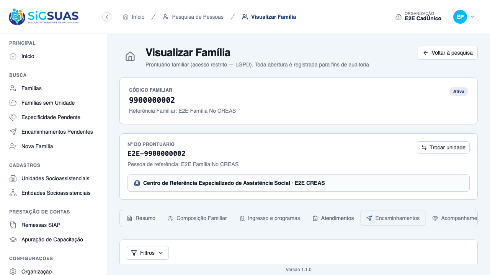
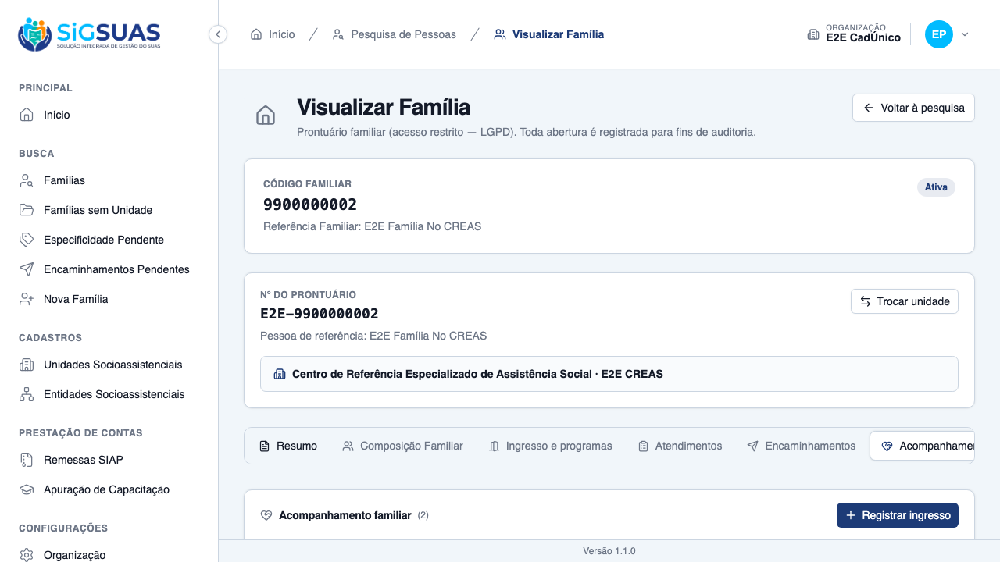
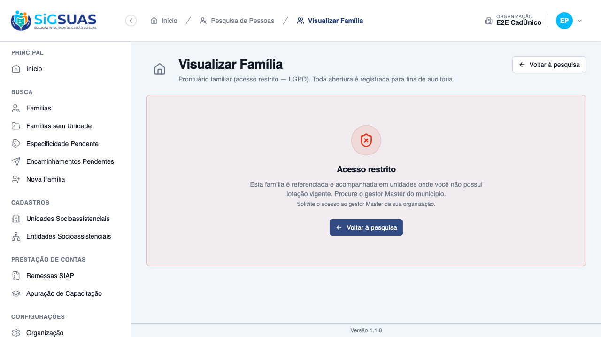

Dez critérios de aceite. Cinco evidenciados no navegador (CA01, CA02, CA03, CA04 e CA05, com quatro prints) e cinco cobertos pela suíte automatizada (CA06, CA07, CA08, CA09 e CA10). A suíte Pest fecha com 34 testes e 179 asserções no filtro FamilyAccess, em arquivo dedicado, e a suíte pré-existente da HU #10617 permanece verde sem alteração de expectativa — o eixo é aditivo. Nenhum critério em falha. A asserção central da história — a negativa não nomeia unidade alguma — é verificada em todos os cenários de recusa.
| CA | Critério | Situação | Evidência |
|---|---|---|---|
| CA01 | Unidade que acompanha acessa (happy path) | ATENDIDO | Print + Pest |
| CA02 | Prontuário inteiro, não só o acompanhamento | ATENDIDO | Print + Pest |
| CA03 | Acompanhamento encerrado mantém o acesso | ATENDIDO | Print + Pest |
| CA04 | Acompanhamento cancelado NÃO dá acesso | ATENDIDO | Print + Pest |
| CA05 | Sem referência e sem acompanhamento: negativa com motivo | ATENDIDO | Print + Pest |
| CA06 | Add-on LGPD continua obrigatório | ATENDIDO (SUITE) | Pest (FamilyAccess) |
| CA07 | Sem lotação vigente não acessa | ATENDIDO (SUITE) | Pest (FamilyAccess) |
| CA08 | Master continua acessando por bypass | ATENDIDO (SUITE) | Pest (FamilyAccess) |
| CA09 | Acompanhar não autoriza iniciar acompanhamento alheio | ATENDIDO (SUITE) | Pest (FollowUp) |
| CA10 | Isolamento entre municípios inalterado | ATENDIDO (SUITE) | Pest (TenantIsolation) |
Dado um profissional com lotação vigente em unidade que acompanha a família, quando abre o prontuário de uma família referenciada em outra unidade, então o acesso é concedido.
access_granted_via = follow_up), distinto dos outros três valores.
Dado o acesso concedido pelo eixo de acompanhamento, quando o profissional navega pelo prontuário, então todas as abas respondem — o corte não é por pedaço.

Dado um acompanhamento desligado, quando o profissional abre o prontuário, então o acesso permanece — vigente ou encerrado concedem.

Dado que o acompanhamento foi cancelado, quando o profissional tenta abrir o prontuário, então o acesso é negado.

Dado um profissional sem lotação na unidade de referência nem em unidade que acompanhe, quando tenta abrir o prontuário, então recebe negativa que explica os dois eixos sem nomear unidade alguma.
error_code permanece unit_not_assigned: contrato estável, só a redação mudou.Dado um profissional sem o add-on families.view-details, quando a unidade dele acompanha a família, então o acesso continua negado — acompanhar não substitui o add-on.
Sem prova visual: critério verificado pela suíte automatizada (ver anexo).
Dado um profissional com lotação encerrada, quando a unidade acompanha a família, então o acesso continua negado.
Sem prova visual: critério verificado pela suíte automatizada (ver anexo).
Dado o gestor Master do município, quando abre qualquer prontuário do tenant, então acessa pelo bypass, sem depender de acompanhamento.
Sem prova visual: critério verificado pela suíte automatizada (ver anexo).
Dado quem acessa o prontuário apenas pelo eixo de acompanhamento, quando tenta abrir um acompanhamento novo naquela família, então a ação é recusada.
Sem prova visual: critério verificado pela suíte automatizada (ver anexo).
Dado um usuário do município A, quando ele tenta acessar o prontuário de uma família do município B — ainda que exista unidade de mesmo nome nos dois —, então o acesso é tratado como registro inexistente.
FamilyAccessTenantIsolationTest e pelas asserções de organização do anexo automatizado.Sem prova visual: critério verificado pela suíte automatizada (ver anexo).
O enunciado da história descreve “o CREAS que acompanha abre o prontuário de família referenciada no CRAS”. Os cenários executados usam os papéis invertidos — um CRAS que acompanha família referenciada no CREAS — porque é o único par que os dados semeados oferecem: o Operacional do seed tem lotação em dois CRAS e nenhuma no CREAS, e a única família do CREAS é justamente a que lhe é inacessível. A semântica provada é idêntica: unidade de lotação que acompanha família referenciada em outra unidade.
Quem semeia o acompanhamento inicial nos cenários é o Master, e isso não é conveniência de teste: o operador da unidade que passará a acompanhar não consegue fazer o primeiro lançamento, porque ainda não tem acesso ao prontuário e este eixo só abre depois que o acompanhamento existe. Verificado empiricamente: o POST responde 403. A HU não define quem faz esse primeiro lançamento — decisão pendente do PO.
Autenticar o Master via API derruba a sessão do Operacional no navegador: o /auth/me seguinte responde 401 e a tela cai no formulário de login. Ocorre mesmo com contextos isolados e mesmo com as sessões do Operacional intactas na tabela sessions; verificou-se que o login não invalida sessões de terceiros e que a sessão única é por user_id.
Enquanto não houver causa raiz, os cenários das duas histórias vivem no mesmo arquivo de spec: em arquivos separados eles caem em workers paralelos e se atropelam. O comportamento está documentado no cabeçalho do spec. Recomenda-se investigação dedicada, por ser um sintoma que, se existir em produção, afetaria usuários simultâneos do mesmo município.
E2ESeeder.PASS Tests\Unit\Services\FamilyAccessAuditServiceTest ✓ it writes one family_access/record_opened entry with the RN05 prope… 0.29s ✓ it writes the denial with a closed-domain reason and no PII in the… 0.02s ✓ it labels the professional name as "<Nome> [Master]" when the Master has… 0.01s ✓ it prefers the local professional name over the master label when t… 0.01s PASS Tests\Unit\Services\FamilyAccessServiceTest ✓ it detects the master role only in the tenant where it was granted 0.03s ✓ it detects the view-details permission per tenant, via the dedicate… 0.03s ✓ it stops counting a revoked (force-deleted) role as a grant 0.03s ✓ it resolves the active professional and denies inactive/soft-delete… 0.03s PASS Tests\Feature\Client\FamilyAccessFollowUpAxisTest ✓ it opens the record for a unit that FOLLOWS the family, auditing vi… 0.06s ✓ it reaches the WHOLE record, not just the follow-up block, includin… 0.07s ✓ it keeps the access after the follow-up is DISCHARGED (CA03/RN02) 0.05s ✓ it does NOT grant access through a CANCELLED follow-up, denying wit… 0.05s ✓ it does NOT grant access through a soft-deleted follow-up (RN02/D05… 0.05s ✓ it denies the unit with NEITHER reference NOR follow-up, stating bo… 0.06s ✓ it does not let the follow-up replace the LGPD add-on (CA06/RN03) 0.05s ✓ it does not let the follow-up replace an ACTIVE unit assignment (CA… 0.05s ✓ it keeps the Master accessing by bypass, never by the follow-up axi… 0.05s ✓ it audits the FOUR distinct access axes (CA01/CA03/CA08/RN04) 0.07s ✓ it does not let following ONE family authorize reaching another one… 0.05s ✓ it keeps the organization isolation ahead of the follow-up axis (CA… 0.06s ✓ it lists the FOLLOWED family in the person search and opens it from… 0.06s ✓ it filters the follow-up axis by tenant_id, even with a numerically… 0.07s ✓ it reports the assigned units that follow the family in the decisio… 0.06s PASS Tests\Feature\Family\FamilyAccessByUnitTest ✓ it opens the record for a professional assigned to the reference un… 0.06s ✓ it answers a family of another unit as ACCESS DENIED, stating the r… 0.05s ✓ it reaches every unit where the professional is assigned, and none… 0.06s ✓ it hides families of other units from the person search, keeping th… 0.06s ✓ it blocks every record for a professional whose assignment is close… 0.06s ✓ it keeps the Master free from the unit cut, auditing the bypass (CA… 0.10s ✓ it does not let the unit assignment replace the LGPD add-on (CA06/R… 0.05s ✓ it keeps a family without reference unit visible during the transit… 0.06s ✓ it starts cutting as soon as the family receives a unit outside the… 0.06s PASS Tests\Feature\TenantIsolation\FamilyAccessTenantIsolationTest ✓ it treats a family of another organization as a nonexistent record,… 0.06s ✓ it never lists people of another organization in the person search,… 0.05s Tests: 34 passed (179 assertions) Duration: 2.35s
[globalSetup] Rate-limiter cache do Laravel zerado. Running 20 tests using 2 workers ✓ 2 [setup] › tests/auth.setup.ts:10:6 › autentica super admin (UI) e propaga cookies para o api-client (1.3s) [tenant-auth.setup] sessão de tenant pronta em /Users/binho/Projetos/esuas-all/e2e/.auth/tenant.json ✓ 1 [setup] › tests/tenant-auth.setup.ts:82:6 › autentica usuário do tenant (client) e propaga cookies para o api-client (1.6s) ✓ 3 [chromium-tenant] › tests/client/family-follow-up.spec.ts:193:7 › US-ACOMP-02 — acompanhamento familiar no prontuário (client) › (g) família nunca acompanhada mostra o estado vazio do bloco (6.6s) ✓ 4 [chromium-tenant] › tests/client/family-follow-up.spec.ts:216:7 › US-ACOMP-02 — acompanhamento familiar no prontuário (client) › (b) num CRAS o select oferece só o PAIF — o PAEFI não é ofertado (7.9s) ✓ 5 [chromium-tenant] › tests/client/family-follow-up.spec.ts:234:7 › US-ACOMP-02 — acompanhamento familiar no prontuário (client) › (d) data futura é barrada no próprio formulário (8.0s) ✓ 6 [chromium-tenant] › tests/client/family-follow-up.spec.ts:262:7 › US-ACOMP-02 — acompanhamento familiar no prontuário (client) › (a) registra o ingresso no PAIF a partir de um CRAS (9.8s) ✓ 7 [chromium-tenant] › tests/client/family-follow-up.spec.ts:295:7 › US-ACOMP-02 — acompanhamento familiar no prontuário (client) › (c) segundo ingresso na mesma unidade e serviço é recusado, apontando o existente (9.4s) ✓ 8 [chromium-tenant] › tests/client/family-follow-up.spec.ts:323:7 › US-ACOMP-02 — acompanhamento familiar no prontuário (client) › (e) cancelar com motivo mantém a linha no prontuário, marcada (7.6s) ✓ 9 [chromium-tenant] › tests/client/family-follow-up.spec.ts:388:7 › US-ACOMP-02 — negativa de acesso ao bloco de acompanhamento (client) › (f) Operacional sem acesso não vê o bloco, e a negativa não nomeia unidade (6.4s) ✓ 10 [chromium-tenant] › tests/client/family-follow-up.spec.ts:511:7 › US-ACOMP-03 — desligamento e avaliação de resultados (client) › (c) os meses de acompanhamento são apresentados calculados e NÃO digitáveis (6.7s) ✓ 11 [chromium-tenant] › tests/client/family-follow-up.spec.ts:532:7 › US-ACOMP-03 — desligamento e avaliação de resultados (client) › (d) "não se aplica" vem sugerida quando não houve encaminhamento — e é alterável (7.5s) ✓ 12 [chromium-tenant] › tests/client/family-follow-up.spec.ts:562:7 › US-ACOMP-03 — desligamento e avaliação de resultados (client) › (b) concluir sem a avaliação é recusado, e o acompanhamento continua vigente (7.9s) ✓ 13 [chromium-tenant] › tests/client/family-follow-up.spec.ts:588:7 › US-ACOMP-03 — desligamento e avaliação de resultados (client) › (e) a combinação incoerente pede confirmação — e, confirmada, é salva como informada (9.8s) ✓ 14 [chromium-tenant] › tests/client/family-follow-up.spec.ts:636:7 › US-ACOMP-03 — desligamento e avaliação de resultados (client) › (a) o desligamento aparece no prontuário com a avaliação ao lado (6.4s) ✓ 15 [chromium-tenant] › tests/client/family-follow-up.spec.ts:659:7 › US-ACOMP-03 — desligamento e avaliação de resultados (client) › (f) a avaliação não tem ação de excluir nem de editar — e não há reabertura (6.5s) ✓ 16 [chromium-tenant] › tests/client/family-follow-up.spec.ts:680:7 › US-ACOMP-03 — desligamento e avaliação de resultados (client) › reingresso após desligamento é aceito, e a linha anterior permanece intacta (9.4s) ✓ 17 [chromium-tenant] › tests/client/family-follow-up.spec.ts:864:7 › US-ACOMP-04 — acesso ao prontuário pela unidade que acompanha (client) › (a) quando a minha unidade acompanha, o prontuário da família de outra unidade abre (5.9s) ✓ 18 [chromium-tenant] › tests/client/family-follow-up.spec.ts:875:7 › US-ACOMP-04 — acesso ao prontuário pela unidade que acompanha (client) › (b) o acesso é ao prontuário INTEIRO — composição, atendimentos e encaminhamentos (6.0s) ✓ 19 [chromium-tenant] › tests/client/family-follow-up.spec.ts:892:7 › US-ACOMP-04 — acesso ao prontuário pela unidade que acompanha (client) › (c) cancelado NÃO concede: o acesso fecha, e a negativa declara os dois eixos sem nomear unidade (12.9s) ✓ 20 [chromium-tenant] › tests/client/family-follow-up.spec.ts:940:7 › US-ACOMP-04 — acesso ao prontuário pela unidade que acompanha (client) › DESLIGADO mantém o acesso — só o cancelamento fecha (US-ACOMP-03 destrava este par) (18.0s) 20 passed (2.7m)